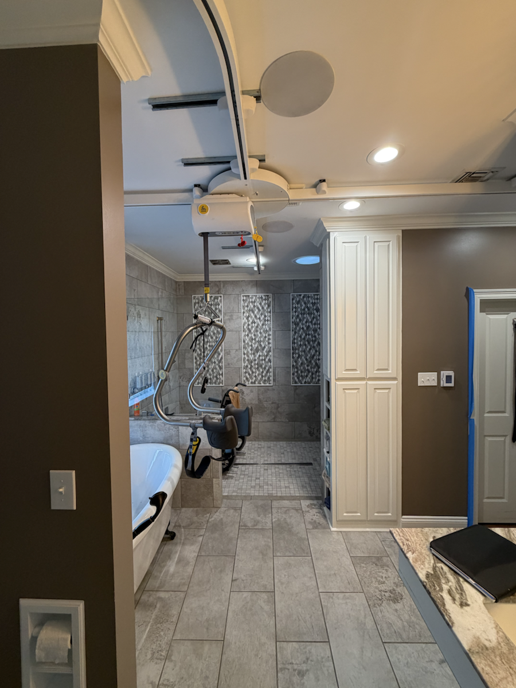
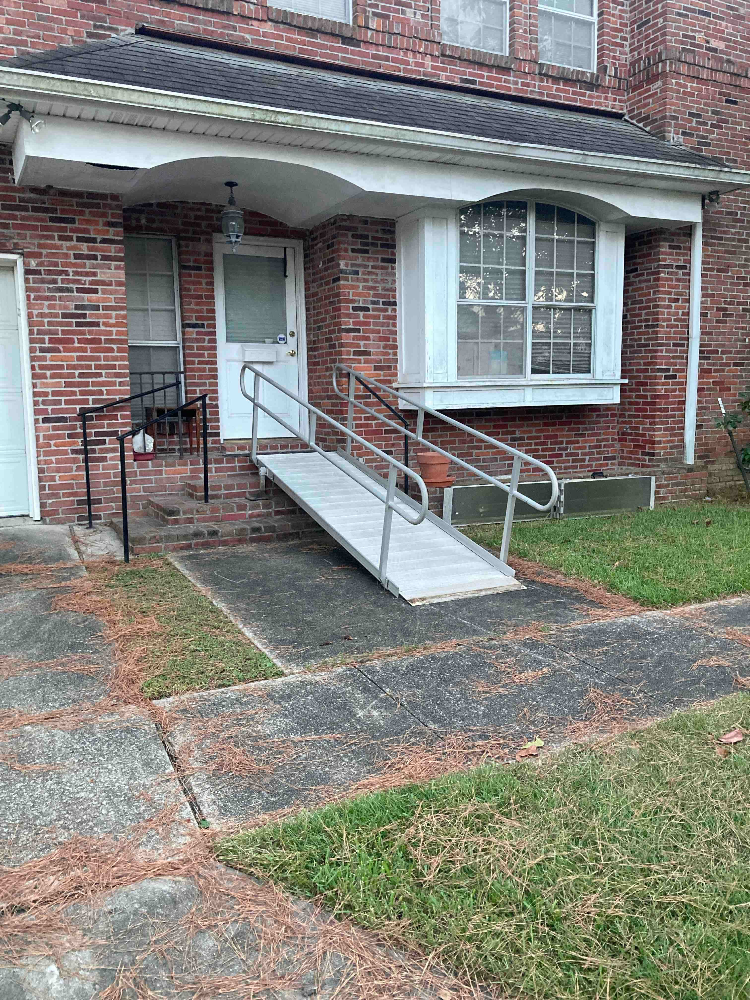
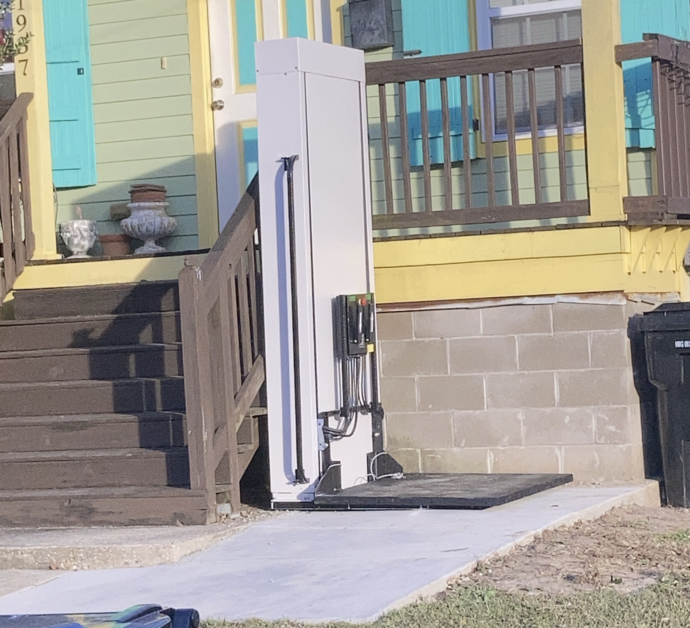
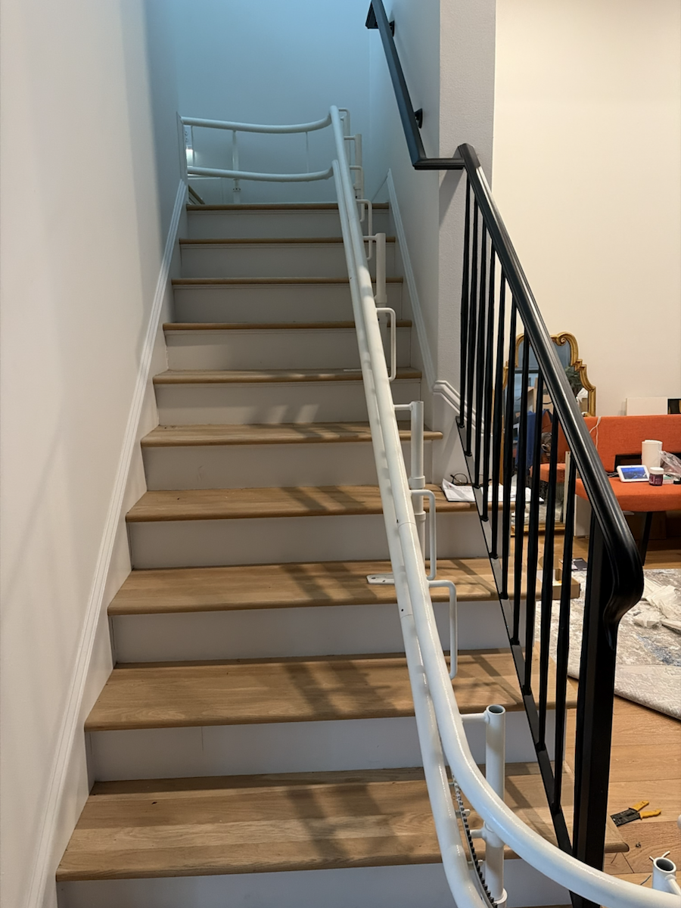
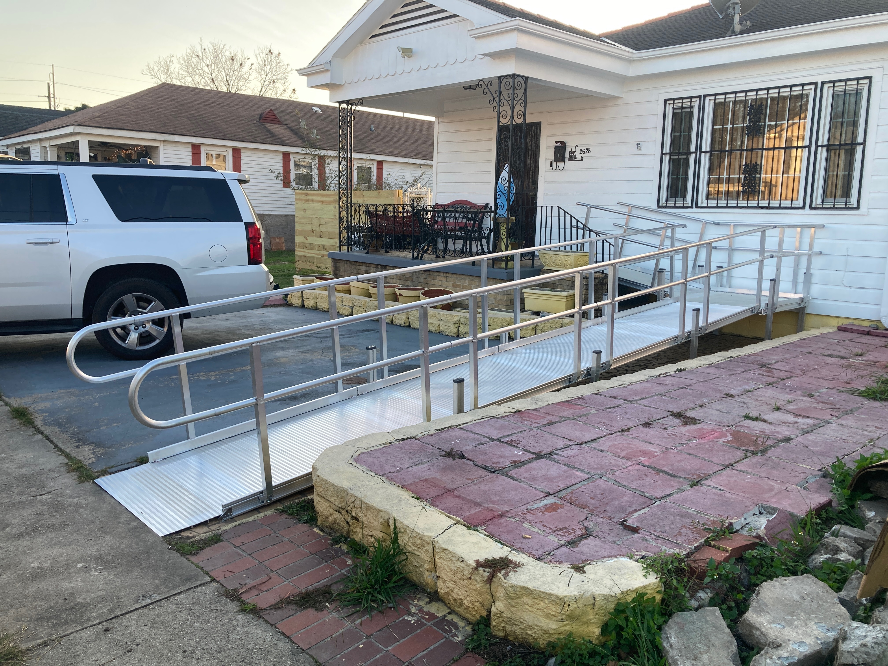

Wheelchair ramps
Entry and exit solutions designed for the property, the user, and the practical demands of daily use.
Home accessibility services in Metairie, Louisiana
Adaptive Access LLC, led by Andre Farnet, helps families, caregivers, and clinicians identify accessibility solutions that support safe mobility, safer transfers, and more effective care at home.
Services include wheelchair ramps, ceiling lifts, bathtub conversion kits, automatic door openers, portable lifts, and other adaptive equipment. Recommendations begin with a site evaluation and are based on the individual, the caregiver, the home, and the budget.
Why Adaptive Access
Recommendations are based on the person, the caregiver, and the physical home environment.
Equipment is delivered and installed with attention to real transfer routines and access needs.
System recommendations balance clinical need, home layout, and financial considerations.
About Adaptive Access
Adaptive Access LLC focuses on practical home modifications and equipment that support safe mobility while reducing physical strain for caregivers.
Andre Farnet works directly with families, caregivers, clinicians, and contractors to recommend systems that fit the mobility needs of the individual and the layout of the home.
Each home and each patient is different. Recommendations are based on the person, the caregiver, the living environment, and the functional goals for safety, transfer support, and independence.
Services
Some homes need safer entry access. Others need better transfer support, bathroom access, or more dependable movement from room to room. Adaptive Access helps assess and address both.
Entry and exit solutions designed for the property, the user, and the practical demands of daily use.
Transfer support planned around patient needs, caregiver workflow, and room layout.
Flexible equipment for homes that need adaptable transfer support across multiple spaces.
Bathroom modifications that make bathing safer and easier for both the individual and the caregiver.
Hands-free access solutions that reduce effort and improve doorway accessibility.
Recommendations shaped around budget, home layout, transfer requirements, and long-term mobility needs.
Transfer Solutions
Adaptive Access LLC partners with SureHands and Handi-Move to deliver patient transfer systems designed for independent use or use with an attendant.
Recommendations start with a thorough review of the patient, the caregiver, and the living environment. Systems are matched to physical needs, space limitations, transfer requirements, and budget.
The goal is to improve quality of life for both the individual and the caregiver by making transfers safer, more dependable, and more manageable on a daily basis.
How It Works
Review mobility goals, caregiver requirements, and the physical realities of the space.
Select products and home modifications that support safety, access, caregiver workflow, and budget.
Work with therapists, nurses, agencies, families, architects, and contractors as needed.
Install the recommended equipment so the final setup works safely in everyday life.
Selected Work
Projects can include safer entry access, transfer support, and mobility equipment for different parts of the home.





Frequently Asked Questions
Yes. Adaptive Access delivers and installs wheelchair ramps, lifts, and other home accessibility products as part of the overall solution.
Yes. Recommendations start with a site evaluation and, when needed, a patient and caregiver assessment.
Yes. Adaptive Access reviews the home layout, the physical needs of the individual, transfer needs, and the budget before recommending a system.
Adaptive Access works with families, therapists, nurses, state agencies, group homes, architects, contractors, and other care partners.
Contact Adaptive Access
If you need safer home access, transfer support, or adaptive equipment, Adaptive Access LLC can help you determine the right next step.
Call to discuss the home setup, the mobility challenge, and the type of access or transfer support that may be needed.